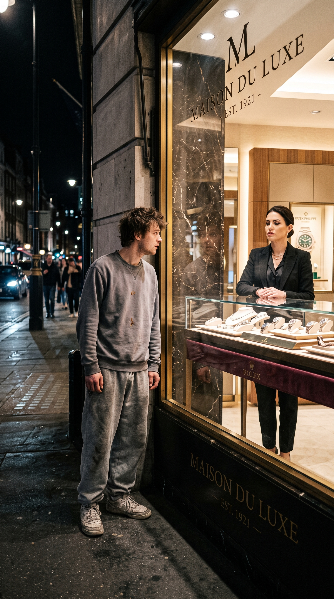

1. El hombre humilde y el vendedor de traje brillante
 ="Hombre humilde en agencia de autos">
="Hombre humilde en agencia de autos">
Era una mañana escandalosamente tranquila en una prestigiosa agencia de autos deportivos europeos. Todo olía a cuero nuevo y a aromatizante caro. De pronto, las puertas de cristal se abrieron y entró un hombre que parecía haber peleado con una tormenta de arena. Llevaba unas botas que dejaban un pequeño rastro de tierra, pantalones desgastados y una gorra de la que asomaban cabellos despeinados. Los vendedores, enfundados en trajes tan ajustados que apenas podían respirar, lo miraron como si hubiera entrado un extraterrestre.
El hombre silbó al ver un deportivo rojo fuego y se acercó para admirarlo. En menos de tres segundos, el vendedor estrella —un sujeto peinado con un litro de gel— se interpuso entre él y el vehículo. Con una sonrisa cargada de sarcasmo, el vendedor sacó un pañuelo de seda y empezó a limpiar el aire cerca del hombre. "Caballero, el concesionario de tractores está a tres cuadras", le dijo con voz nasal. "Le pido que no respire muy fuerte sobre la pintura, esta belleza cuesta más que la granja de su familia".
El hombre, lejos de ofenderse, soltó una carcajada que resonó en todo el local. Le preguntó al vendedor si la arrogancia venía incluida en el financiamiento o si la cobraban como extra. El vendedor, ofendido, llamó a seguridad. Ante la conmoción, el hombre de la gorra simplemente sacó un teléfono celular —que valía más que el traje del vendedor— y marcó un número. "Oye, Roberto, baja un momento, creo que tu empleado estrella está a punto de echarme a la calle", dijo tranquilamente.
El sonido de unos zapatos corriendo a toda velocidad por las escaleras interrumpió la escena. Era el gerente general, pálido como un fantasma. Apartó al vendedor de un empujón casi olímpico y empezó a sudar frío. Para sorpresa de todos, el "campesino" no solo quería comprar el auto deportivo rojo al contado para su nieto, sino que era el dueño absoluto del terreno donde estaba construida la agencia. El vendedor engreído terminó buscando trabajo esa misma tarde, probablemente en un lugar donde los trajes no fueran tan ajustados.
2. La señora de la limpieza y el terror corporativo

En el piso 40 de un reluciente rascacielos de negocios, una mujer mayor con su fiel carrito de limpieza trabajaba en la sala de juntas. Faltaban diez minutos para la reunión trimestral, y la sala fue invadida por cinco jóvenes ejecutivos. Entraron hablando a gritos sobre sus partidos de golf, sus relojes inteligentes y lo mucho que les aburría la junta. Al ver a la señora, la ignoraron olímpicamente, hasta que uno de ellos decidió que era divertido dejar su vaso de café a medio tomar justo en el lugar que ella acababa de limpiar.
"Oye, abuela, apúrate con esa escoba que hueles a cloro y estorbas el aura del éxito", bromeó el líder del grupo, mientras los demás reían a carcajadas. Le exigieron que vaciara los basureros y que no hiciera contacto visual con ellos, "porque la pobreza es contagiosa". La mujer no dijo una sola palabra. Con una paciencia infinita, roció un poco de aromatizante sabor manzana muy cerca del ejecutivo bromista, tomó su carrito y salió de la sala con paso lento.
Minutos después, el director general entró a la sala sudando a mares. Anunció que la misteriosa fundadora de la empresa, que operaba desde el extranjero y a la que nadie conocía en persona, había aterrizado sorpresivamente y dirigiría la junta. Las grandes puertas dobles se abrieron con dramatismo de telenovela. El silencio fue sepulcral. Allí estaba la "abuela del cloro", sin el delantal, vistiendo un traje sastre de diseñador que cortaba la respiración, y una mirada que podía congelar el café de los ejecutivos.
Se sentó en la silla principal, cruzó los brazos y miró al joven bromista que ahora estaba más blanco que una hoja de papel. "Me encanta el aura de éxito de esta sala, pero creo que hay exceso de basura", dijo con una sonrisa letal. En los siguientes quince minutos, procedió a despedir a los cinco ejecutivos por su pésima cultura laboral. La moraleja fue clara: a veces el verdadero jefe empuja un carrito antes de empujar tu carta de despido.
3. El campesino frente al platillo deconstruido

Don Anastasio, un hombre de campo con manos curtidas y un sombrero que había visto mejores décadas, se plantó frente al restaurante más pedante y exclusivo del distrito financiero. Llevaba a su esposa del brazo para celebrar sus bodas de oro. Había ahorrado billete sobre billete para invitarla a ese lugar donde, según decían, servían comida "deconstruida". Al llegar al atril, el maître los escaneó de arriba abajo con cara de haber olido leche en mal estado.
"Lo siento, caballero, pero nuestro establecimiento requiere un código de vestimenta que no incluye... eh... texturas rústicas", dijo el encargado, usando palabras domingueras para decirles que estaban muy mal vestidos. Anastasio, con su habitual amabilidad, le mostró un fajo de billetes y le explicó que tenían reservación. El maître hizo una mueca, llamó a seguridad con la mirada y les pidió que se retiraran porque estaban "alterando el ecosistema visual de los clientes premium".
La esposa de Anastasio se sintió tan avergonzada que casi arrastró a su marido a la taquería de la esquina, donde al menos los tacos no estaban "deconstruidos". Anastasio se comió sus de pastor en silencio, pero con una media sonrisa dibujada en el rostro. A la mañana siguiente, el teléfono de la oficina del gerente del restaurante de lujo no paraba de sonar. El contrato de arrendamiento del enorme local había expirado y la inmobiliaria acababa de enviar un aviso de desalojo inmediato.
El gerente corrió a la oficina de la agencia inmobiliaria para rogar por una extensión de contrato. Cuando abrió la puerta del despacho del dueño principal, casi se desmaya: ahí estaba Don Anastasio, con el mismo sombrero viejo y las mismas "texturas rústicas". "Me dijeron que este edificio altera mi ecosistema visual, así que decidí demoler el restaurante y poner una taquería", dijo el anciano soltando una risotada. El restaurante cerró, y Anastasio demostró que quien es dueño de la tierra, ríe al último.
4. El chándal manchado de mostaza y el reloj de oro

Era sábado al mediodía en la calle más cara de la ciudad. Un joven entró a una boutique de alta relojería que parecía un museo vigilado. Llevaba unos pantalones deportivos holgados, unas zapatillas que habían perdido su color original hace años, y una sudadera con una sospechosa mancha de mostaza en el pecho. Las tres vendedoras de la tienda, que parecían clones de una revista de moda europea, lo miraron como si acabara de entrar una paloma al local.
El joven se acercó a la vitrina de los relojes de edición limitada y apoyó un dedo en el cristal para señalar uno. Una de las vendedoras, a la velocidad de la luz, corrió con un paño de microfibra a limpiar la huella dactilar. "Joven, esos relojes cuestan más que la hipoteca de su casa. Le sugiero que mire en la tienda de descuentos cruzando la calle, allá tienen cosas digitales muy bonitas con lucecitas", le dijo con una sonrisa que cortaba como un cuchillo.
El chico levantó los hombros, murmuró un "okey, gracias" y cruzó la calle directo a la joyería rival. A diferencia de las señoritas snob, el gerente de la competencia lo reconoció al instante: era el delantero estrella del equipo nacional, recién llegado de ganar la liga europea, famoso por vestir como vagabundo en sus días libres. En la segunda tienda, lo sentaron en un sillón de piel, le sirvieron champán y en media hora le vendieron dos relojes con incrustaciones de diamantes.
La vendedora de la primera tienda vio toda la escena desde su vitrina, pegando la nariz al cristal cuando vio al joven salir con bolsas de lujo que valían miles de dólares. Cuando la noticia llegó a los oídos del supervisor regional, el regaño fue tan monumental que todavía se escucha el eco en los probadores. La moraleja: la próxima vez que veas una mancha de mostaza, asegúrate de que no pertenezca a un millonario excéntrico.
5. La legendaria bolsa del mandado en el banco VIP

El banco estaba a reventar. En la fila de la ventanilla principal, una dulce viejecita esperaba pacientemente su turno. No llevaba un bolso de marca ni un maletín; llevaba una arrugada bolsa de plástico de un supermercado económico, de esas que tienen el logo de un pollo asado impreso a un lado. Cuando llegó frente al cajero —un joven de 22 años que se creía el lobo de Wall Street—, él suspiró con tal fuerza que casi vuela los recibos de su escritorio.
"Señora, la fila para cobrar la pensión es en el cajero de afuera", dijo el muchacho masticando chicle de forma ruidosa y tecleando en su computadora sin mirarla. "Aquí solo atendemos operaciones grandes, no tengo cambio para su pollo asado". La viejecita lo miró a través de sus gruesos lentes de aumento. Con una voz suave pero firme, le dijo que no venía a cobrar nada, sino a retirar el dinero de su cuenta de ahorros.
El cajero puso los ojos en blanco, tomó la tarjeta de la señora con dos dedos (como si quemara) y la deslizó por el sistema. Cuando vio la pantalla, dejó de masticar chicle. Trago saliva con dificultad. Parpadeó tres veces y golpeó el monitor de su computadora creyendo que el sistema se había roto. La cuenta no tenía miles, tenía docenas de millones de dólares. La abuelita, viuda de un magnate de la tecnología, guardaba su inmensa fortuna en esa sucursal.
"Como le decía, jovencito", continuó la abuela sacando unos documentos de su bolsa de plástico crujiente, "quiero retirar cada centavo. Me llevaré mi cuenta a un banco donde los cajeros no mastiquen como rumiantes". El director del banco salió de su oficina tropezando con los muebles, pero la abuela fue inflexible. Cerró su cuenta, hundiendo la meta anual de la sucursal. El cajero aprendió que, en el mundo de las finanzas, las bolsas de plástico del supermercado a veces guardan sorpresas catastróficas.
6. El joven del autobús y el gerente de Recursos Humanos

Eran las ocho de la mañana y llovía a cántaros. Un joven vestido con un traje modesto pero impecable se subió al autobús para ir a la entrevista de trabajo de su vida. En el siguiente paradero, subió un hombre con un traje carísimo que, al ver que no había asientos vacíos, empezó a quejarse en voz alta sobre cómo "la gente de hoy no tiene modales". El joven, sin dudarlo, se levantó y le cedió su lugar con una sonrisa educada.
En lugar de agradecer, el hombre del traje caro se sentó, sacudió su paraguas mojando los zapatos del joven y murmuró: "Por fin alguien que sabe cuál es su lugar. Si tuvieras un coche, no tendrías que ir oliendo a humedad, muchacho". El joven no dijo nada, simplemente se agarró del tubo y esperó su parada. Casualmente, ambos bajaron en el mismo imponente edificio corporativo de cristal.
Una hora más tarde, el joven estaba sentado en la sala de espera de la empresa para su entrevista como Director de Proyectos. Cuando lo llamaron a la oficina principal, adivina quién estaba sentado del otro lado del escritorio: el mismísimo señor del paraguas. Al verlo, el gerente soltó una carcajada. "¿Tú? ¿El chico del autobús? Por favor, esta empresa busca líderes con mentalidad de tiburón, no usuarios de transporte público", dijo mientras tiraba el currículum del joven a la basura sin siquiera leerlo.
Justo en ese momento, la puerta de la oficina se abrió de golpe. Entró el CEO y dueño de la compañía, un hombre de setenta años conocido por su estricta moral. "Veo que ya conociste a mi nieto", le dijo el CEO al gerente. "Él es el nuevo vicepresidente operativo y viene a evaluar qué empleados conservan sus valores... y cuáles sobran". La mandíbula del gerente casi llega al suelo. Su despido fue tan rápido que no tuvo tiempo ni de abrir su paraguas para salir a la lluvia.
7. La abuelita tejedora en la subasta de arte moderno

La galería de arte de la ciudad estaba celebrando la subasta del siglo. Multimillonarios, críticos de arte con gafas de pasta y socialités bebían champán mientras analizaban pinturas que parecían manchas de salsa de tomate. En la última fila, sentada en una silla plegable, había una viejecita tejiendo un suéter de lana. Llevaba un vestido floreado y zapatos ortopédicos. El organizador del evento, un tipo con un bigote finamente peinado, la miraba con horror.
Cuando llegó el momento de subastar la obra principal —un lienzo blanco con un solo punto negro en el centro llamado "El Vacío Existencial"—, las pujas comenzaron en cincuenta mil dólares. Los coleccionistas peleaban ferozmente. De pronto, la abuelita levantó una de sus agujas de tejer. "¡Cien mil!", gritó con voz aguda. La sala entera se giró a verla. Una señora envuelta en abrigos de piel soltó una risita burlona: "Ay, por favor, señora, esto no es un remate de estambre".
El organizador se acercó apresuradamente y le susurró a la viejecita que si no podía comprobar los fondos, tendría que llamar a la policía por interrumpir un evento de élite. Ella, sin dejar de tejer, le entregó una tarjeta negra y su identificación. El hombre palideció. Corrió al micrófono temblando y anunció: "Damas y caballeros, la puja ganadora es de la señora... eh... la mismísima artista creadora de la obra, que ha venido a comprarla de vuelta".
La señora del abrigo de piel casi se atraganta con su canapé de caviar. Resultó que la dulce viejecita era la artista conceptual más cotizada de Europa, que operaba bajo un seudónimo misterioso. Compró su propia obra solo para demostrar lo ridículo que podía ser el esnobismo del mundo del arte. Antes de irse, le regaló a la señora de las pieles el suéter a medio tejer, diciéndole: "Cúbrase, querida, su envidia le está dando escalofríos".
8. El conserje invisible y la máquina de café

En las oficinas de una prestigiada firma de arquitectos, la máquina de café italiana de cinco mil dólares había dejado de funcionar. Para los arquitectos estrella del lugar, esto era una tragedia nivel catastrófico. Mientras tres de ellos golpeaban la máquina quejándose de que no podían diseñar sin su dosis de cafeína, el joven conserje del edificio, vestido con su overol azul, se acercó con una caja de herramientas.
"Atrás, muchacho, esto es tecnología europea, no una tubería tapada", le gritó uno de los arquitectos, un sujeto que usaba bufanda en pleno verano. "Si tocas esto con tus manos llenas de polvo, la vas a arruinar más. Llama al técnico oficial y vete a trapear el lobby". El joven conserje se encogió de hombros, recogió su caja de herramientas y se fue silbando por el pasillo, dejando a los arquitectos sufriendo por su abstinencia de espresso.
Al día siguiente, los socios principales de la firma tenían una presentación vital para ganar la licitación de un rascacielos. Cuando encendieron el proyector de alta tecnología en la sala de juntas, este se apagó con un cortocircuito. El pánico estalló. El técnico oficial estaba a horas de distancia. Desesperados, el arquitecto de la bufanda corrió a buscar ayuda y encontró al conserje leyendo un libro de ingeniería mecatrónica en su descanso.
Con lágrimas en los ojos, el arquitecto le rogó que echara un vistazo. El joven dejó su libro, fue a la sala de juntas y en dos minutos reconfiguró los cables del proyector. "Estudio mi maestría en robótica por las noches, pero supongo que mis manos llenas de polvo sirven para algo más que trapear", dijo el joven con una sonrisa de victoria. La firma no solo le dio un bono inmenso, sino que el arquitecto arrogante fue obligado a prepararle el café al conserje durante un mes entero.
9. El repartidor de pizza y el directivo hambriento

Eran las diez de la noche de un viernes y un joven repartidor en motocicleta navegaba por el tráfico de la ciudad bajo una llovizna fría. Su destino era una mansión en el vecindario más exclusivo. Al llegar y tocar el timbre, la puerta fue abierta por un directivo bancario que vestía una bata de seda y tenía cara de pocos amigos. El joven, temblando un poco de frío, le entregó las tres pizzas familiares sonriendo amablemente.
"¡Llegas cinco minutos tarde!", gritó el directivo, arrebatándole las cajas. "La comida está tibia. Debería reportarte para que te despidan. Obviamente no te voy a dar ni un centavo de propina, lárgate antes de que llame a la seguridad del fraccionamiento". Le cerró la inmensa puerta de roble en las narices de un portazo. El repartidor, empapado, simplemente suspiró, encendió su moto y regresó a la pizzería a terminar su turno.
El lunes siguiente, el directivo de la bata de seda estaba en las oficinas centrales de su banco, preparándose para rogar por un préstamo multimillonario para salvar su empresa paralela que estaba en quiebra. Lo hicieron pasar a la oficina del Inversionista Ángel más codiciado del país, un misterioso emprendedor tecnológico conocido por su excentricidad y por invertir solo en personas con "buena calidad humana".
Cuando la silla de cuero giró, el directivo sintió que se le bajaba la presión. Detrás del escritorio no había un anciano de traje, sino el repartidor de pizza del viernes, vestido con una camiseta básica. "Me disculpo si la aprobación de su préstamo llega cinco minutos tarde", dijo el joven cruzando los dedos sobre la mesa. "Pero me temo que mi capital está tibio para su proyecto. Buena suerte en otro lado". El directivo salió de la oficina sabiendo que esos veinte dólares de propina que no dio le acababan de costar su imperio.
10. El abuelo despistado en la tienda de tecnología

Un martes por la tarde, un señor de unos setenta años, con tirantes y pantalones de pana, entró arrastrando los pies a la tienda de tecnología más moderna de la ciudad. Las pantallas parpadeaban, la música electrónica sonaba a todo volumen y los vendedores, todos menores de veinticinco años, tecleaban en sus tablets creyéndose los dueños del universo cibernético. El abuelito se detuvo frente al modelo de computadora portátil más caro de la tienda, ajustándose los lentes.
Trató de llamar la atención de un vendedor, pero este lo ignoró deliberadamente para seguir mandando mensajes por su teléfono. Cuando el señor insistió, el muchacho se acercó bufando. "Señor, ese equipo es para desarrolladores de software y edición de video en 4K. Para leer sus correos y jugar solitario, la sección de tablets baratas está al fondo junto a los baños", le dijo con tono de estar hablándole a un niño pequeño.
El abuelo sonrió de forma entrañable. Metió la mano en el bolsillo de sus pantalones de pana y sacó una tarjeta de presentación antigua. Se la entregó al vendedor y le pidió hablar con el gerente de la sucursal. El muchacho miró la tarjeta y su rostro pasó de la arrogancia al pánico puro. La tarjeta tenía el logotipo de la empresa creadora de esas computadoras, y el nombre impreso correspondía a uno de los tres fundadores originales de la compañía en Silicon Valley.
El gerente salió volando de la bodega. Resultó que el "abuelo que jugaba solitario" estaba allí para comprar 200 de esas computadoras al contado para donarlas a una escuela pública de la zona. "Me llevaré los equipos, pero quiero que la comisión de esta inmensa venta vaya para el guardia de seguridad de la entrada, él fue el único que me dio los buenos días", ordenó el anciano. El vendedor arrogante se quedó viendo cómo su comisión del año desaparecía frente a sus narices por no tener cinco minutos de educación.
11. El mecánico lleno de grasa y el auto de colección

Un clásico deportivo de los años 60, brillante y ruidoso, se detuvo a trompicones frente a un modesto taller mecánico de barrio. De él bajó un hombre usando mocasines sin calcetines y gafas de sol en un día nublado. Al ver salir al mecánico jefe —un hombre robusto con las manos manchadas de aceite y un overol desgastado— el cliente arrugó la nariz como si hubiera pisado algo desagradable.
"Oye, tú, cambia bujías", dijo el dueño del auto, chasqueando los dedos. "Mi motor está haciendo un ruido extraño. Pero límpiate esas manos asquerosas primero, no quiero que manches el tapizado de cuero importado de Italia. Y apúrate, que mi tiempo vale más que todo este taller junto". El mecánico se limpió las manos pacientemente con un trapo, miró el motor del auto clásico y luego cruzó los brazos con una sonrisa ladeada.
"Pues fíjese que este motor italiano requiere piezas originales que ya no se fabrican, y una calibración manual que solo dos personas en esta ciudad saben hacer", respondió el mecánico tranquilamente. El dueño del auto soltó una risotada, burlándose de que un "simple engrasa-tuercas" supiera de motores europeos. Exigió que le hicieran el trabajo de inmediato o llamaría a las autoridades para cerrar "ese basurero".
El mecánico suspiró, cerró el capó del auto de golpe y se dio la vuelta. "La otra persona que sabe hacerlo está en Europa. Yo soy el presidente del club nacional de autos clásicos y dueño de la importadora de refacciones en todo el país. Y adivine qué... me acaban de dar ganas de tomarme unas vacaciones". El cliente arrogante tuvo que pagar una grúa costosísima para llevarse su auto inútil de regreso a casa, aprendiendo que, en el mundo de los motores, el rey siempre usa overol.
12. La turista en chanclas en el hotel de ultra lujo

El vestíbulo del "Grand Imperial Resort" parecía un palacio recubierto de mármol y candelabros de cristal. Hasta allí llegó una mujer joven arrastrando una maleta de tela sin marca, vistiendo unos pantalones cortos de mezclilla, una camiseta básica y unas chanclas de goma. Cuando se acercó a la recepción, el conserje jefe, que vestía mejor que un pingüino de gala, ni siquiera levantó la vista de la computadora.
"Disculpe, tengo una reservación", dijo la chica amablemente. El conserje, con voz helada, le informó que el albergue juvenil estaba a tres kilómetros de allí. Cuando ella insistió en darle su nombre, él suspiró teatralmente: "Señorita, nuestras habitaciones cuestan mil dólares la noche. A menos que sus chanclas estén hechas de oro sólido, le sugiero que despeje el área para nuestros verdaderos huéspedes".
La chica asintió, sacó una libreta pequeña de su bolsillo, anotó algo rápidamente y pidió hablar con el gerente general del hotel. El conserje, burlón, llamó al gerente esperando que la echaran con los guardias de seguridad. Pero cuando el director del hotel salió y vio el rostro de la chica, estuvo a punto de sufrir un infarto frente a todos los turistas. Empezó a sudar frío y a ofrecer disculpas tartamudeando.
La chica en chanclas no era otra que la famosa "Huésped Fantasma", la crítica hotelera más temida de la revista internacional de turismo que otorgaba las codiciadas cinco estrellas de diamante. Su trabajo era viajar de incógnito para calificar el trato real que daban los hoteles. "Su mármol es precioso, señor gerente", dijo ella cerrando su libreta. "Pero su calidad humana le acaba de costar dos estrellas a este resort". El conserje de gala pasó de dar la bienvenida a empujar carritos de maletas en el turno de madrugada.
13. El paseador de perros y la dueña exigente

En el parque canino de un barrio exclusivo, un joven en ropa deportiva paseaba felizmente a cinco perros de diferentes razas. Estaba jugando con ellos cuando una mujer enfundada en ropa de diseñador llegó con su caniche francés meticulosamente peinado. Al ver al joven, la mujer frunció el ceño, sacó su teléfono y empezó a grabarlo amenazando con denunciarlo por "invadir un parque privado para hacer su sucio negocio de paseador de perros callejeros".
"No quiero que esas bestias pulgosas se acerquen a mi Fifí", gritó la mujer a pleno pulmón, haciendo un escándalo que atrajo la atención de todos en el parque. "¡Búscate un trabajo de verdad, vago, en lugar de vivir de las mascotas de la gente civilizada!". El joven, con mucha calma, ató las correas de los perritos, recogió las pelotas con las que jugaban y se retiró del parque en silencio para no generar más drama.
Al fin de semana siguiente, se celebraba el evento social del año para esa mujer: la Gran Exposición Canina Nacional, donde esperaba que su caniche ganara el listón azul. Ella desfiló por la pista con aire de realeza, hasta que el juez principal del evento subió al podio. La mujer casi tropieza con sus propios tacones al verlo: era el mismísimo "paseador de perros vago", ahora vistiendo un impecable traje formal.
Resultó que el joven no era un paseador contratado, sino el veterinario en jefe y fundador de la principal clínica del país. "A Fifí le falta jugar con otros perritos en el parque", le guiñó el ojo el veterinario al darle el segundo lugar, dejando a la dueña hirviendo de coraje frente a toda la alta sociedad.
14. La mujer de las plantas y la presidenta del vecindario

Una mujer con pantalones de mezclilla manchados de tierra y un sombrero de paja estaba arrodillada podando las rosas en la entrada de un fraccionamiento de lujo. En ese momento, la temida Presidenta de la Asociación de Vecinos llegó tocando el claxon de su camioneta último modelo para que la mujer se quitara del camino.
"¡Oye tú! ¿Quién te contrató para arruinar las rosas del condominio?", le ladró la presidenta. "Ese corte transversal es de novatos. Mañana mismo hablaré con la administración para que tu empresa de jardinería de quinta sea despedida y vetada. ¡Incompetente!". La mujer del sombrero de paja simplemente cortó una rosa roja perfecta, se la tendió a la presidenta y le sonrió sin decir nada.
A la mañana siguiente, la presidenta convocó una junta vecinal de emergencia en la casa club para exigir el despido de la jardinera. Cuando el administrador del complejo encendió el micrófono, pidió un aplauso para presentar a la dueña mayoritaria de la constructora que había diseñado todo el desarrollo. Por la puerta entró la mujer del sombrero de paja, ahora con un vestido elegante y su misma sonrisa pacífica.
"Me enteré que mi técnica de corte es de novatos. Como dueña mayoritaria, someteré a votación el cambio de la mesa directiva vecinal", anunció al micrófono. En menos de diez minutos, la tirana presidenta fue destituida por unanimidad gracias a unas simples rosas mal podadas.
15. El músico callejero y el gerente estirado del café

En el corazón bohemio de la ciudad, un chico de veinte años con una guitarra vieja se sentó en la terraza de una famosa cadena de cafeterías. Pidió un vaso de agua y comenzó a tocar suavemente unos acordes. A los cinco minutos, el gerente del local, obsesionado con la "imagen corporativa", salió como un huracán a la terraza.
"Esto no es un campamento de verano, niño", le espetó el gerente, arrebatándole el vaso de agua de la mesa. "Estás ahuyentando a los verdaderos clientes con tu ruido. Si quieres pedir limosna, vete a la estación del metro. ¡Fuera de mis mesas exclusivas!". El chico guardó su guitarra en el estuche con parches y se marchó pidiendo disculpas.
Dos semanas después, la cadena de cafeterías anunció un concurso a nivel nacional. El evento final se realizó en esa misma sucursal. El gerente estaba en primera fila aplaudiendo para quedar bien con el cazatalentos internacional. Cuando anunciaron a la sensación viral del momento en internet, el chico de la guitarra vieja subió al escenario.
"Quiero agradecerle al gerente de este local. Gracias a que me corrió hace dos semanas, me fui al metro, alguien me grabó tocando esta canción y mi vida cambió para siempre", dijo el chico al micrófono. El gerente no solo fue la burla del evento, sino que su jefe regional lo degradó por su nulo ojo para el talento.
16. La vendedora de empanadas y los muffins orgánicos

Doña Carmelita llevaba diez años vendiendo sus famosas empanadas calientes en la misma esquina. Todo iba bien hasta que abrieron una cafetería "ultra gourmet" justo detrás de su puesto. La dueña del local salió un día con una escoba y le gritó a Carmelita que su canasto "arruinaba la estética minimalista" de su fachada, llamando a la policía para que la quitaran de ahí.
Carmelita, sin hacer escándalo, movió su puesto un par de cuadras. Mientras tanto, la dueña de la cafetería intentaba vender "muffins orgánicos de chía", pero el negocio era un fracaso. Meses después, las deudas se la comieron viva y el banco puso el elegante local en remate. El día de la venta, la dueña estaba empacando sus licuadoras llorando su mala suerte.
De pronto, las puertas se abrieron y entró el nuevo propietario que acababa de comprar el local en efectivo. Era Doña Carmelita, acompañada de un arquitecto. Resultó que sus empanadas eran tan famosas que había ahorrado una fortuna y estaba lista para abrir su primer restaurante en forma.
"No se preocupe, mija, le dejo sacar sus cosas con calma. Y si le da hambre, le regalo una empanada, que la chía como que no llena", le dijo Carmelita. La lección fue brutal: a veces la persona a la que corres de la banqueta termina comprando el edificio entero.
17. Los zapatos rotos y el profesor implacable

En la facultad de Economía más prestigiosa del país, un estudiante llegó a clase con sus únicos zapatos de vestir pegados con cinta adhesiva. El profesor principal, conocido por humillar a los alumnos, detuvo su cátedra para señalarlo y dijo que "alguien con esos zapatos jamás pisaría un banco importante".
El chico sintió que la cara le ardía de vergüenza, pero no bajó la mirada y siguió anotando la lección. Pasaron quince años. El profesor tomó decisiones financieras desastrosas, perdió su pensión y su casa estaba a punto de ser embargada. Desesperado, acudió al banco más grande del país para suplicar una reestructuración de su deuda.
Cuando la secretaria lo hizo pasar a la inmensa oficina de la junta directiva, el profesor se quedó helado. Sentado en la silla de cuero del presidente ejecutivo, vistiendo unos zapatos italianos impecables, estaba aquel alumno del que tanto se había burlado. El joven banquero leyó el expediente sin mostrar rencor.
"Aprobaremos su rescate financiero, profesor. Pero recuerde que a veces el estudiante al que pisotea hoy, es el que firma sus cheques mañana", dijo el exalumno, regalándole elegantemente un rollo de cinta adhesiva por si sus finanzas volvían a romperse.